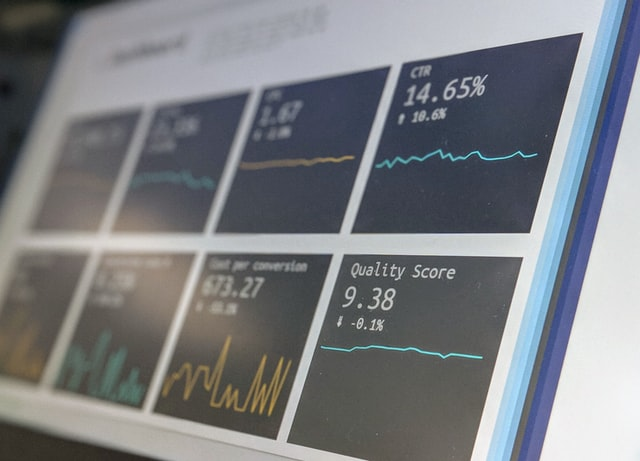

detailed service.
data munging
Munging is the standard definition for irrevocably changing or damaging data beyond its original state. The term is thought to have originated as a backronym for “Mash Until No Good”.

business needs and analysis
Business analysis is a professional discipline of identifying business needs and determining solutions to business problems. Solutions often include a software-systems development component, but may also consist of process improvements, organizational change or strategic planning and policy development.

data preparations
Manual data prep is error-prone, time-consuming and costly. Business decisions rely on analytics. But, if the data is inaccurate or incomplete, your analytics inform wrong businesses decisions. Bad analytics means poor business decisions. Monarch is programmed with over 80 pre-built data preparation functions to speed up arduous data cleansing projects.

machine learning
Machine learning is a method of data analysis that automates analytical model building. It is a branch of artificial intelligence based on the idea that systems can learn from data, identify patterns and make decisions with minimal human intervention.